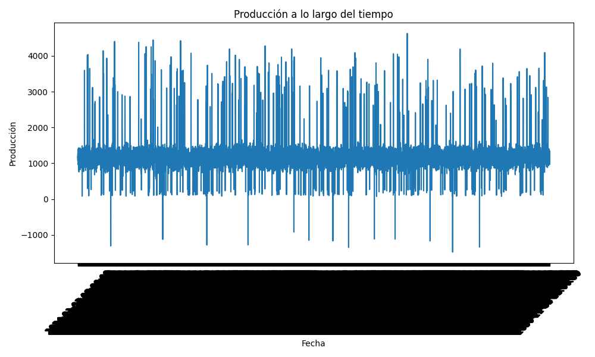

Reporte de Producción
Resumen Estadístico
|
produccion_bpd |
presion_psi |
temperatura_f |
agua_porcentaje |
gas_porcentaje |
| count |
8384.000000 |
8384.000000 |
8384.000000 |
8384.000000 |
8384.000000 |
| mean |
1192.870420 |
1756.499094 |
145.010675 |
14.986009 |
17.999416 |
| std |
413.749011 |
364.088241 |
21.233363 |
4.974880 |
3.941642 |
| min |
-1478.800000 |
-1857.700000 |
-242.600000 |
0.000000 |
2.600000 |
| 25% |
1042.475000 |
1656.300000 |
136.900000 |
11.600000 |
15.300000 |
| 50% |
1181.600000 |
1749.000000 |
145.100000 |
15.050000 |
18.000000 |
| 75% |
1301.300000 |
1842.500000 |
153.000000 |
18.400000 |
20.700000 |
| max |
4625.400000 |
4343.300000 |
274.600000 |
37.400000 |
33.400000 |
Gráfico de Producción
